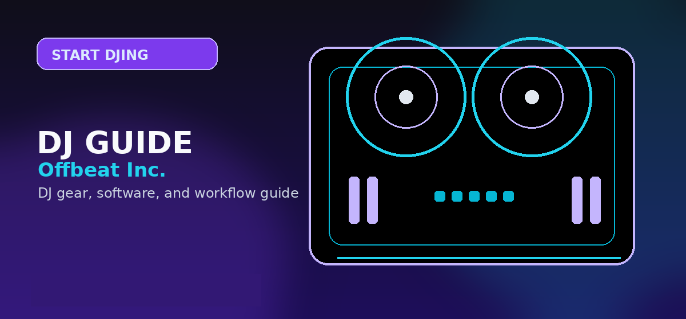

Beginner DJ Setup Guide 2026: Best Equipment for Starting Your Journey
Comprehensive guide to beginner DJ setup guide equipment controller mixer headphones laptop 2026 with practical recommendations and current buying notes — updated 2026.

Disclosure: This page uses affiliate links. We may earn a commission at no extra cost to you. Full disclosure →
Starting your DJ journey in 2026 is more accessible than ever, but the sheer volume of gear can be overwhelming. The modern beginner's challenge isn't finding equipment—it's avoiding "gear regret" by purchasing tools that are either too simplistic to grow with or too complex to learn on. Today's entry-level ecosystem centers on the "hybrid" approach, blending tactile MIDI controllers with powerful AI-driven software. Whether you aim to play bedroom sets, stream on Twitch, or eventually land a club residency, your initial investment should prioritize reliability, software compatibility, and ergonomic design. By focusing on a core quartet of equipment—the laptop, controller, headphones, and monitors—you can build a professional-grade foundation without draining your bank account. This guide breaks down the essential hardware you need to transition from a music listener to a performer.
The Brain: Laptops and Software
Your laptop is the engine of your setup. In 2026, you need a machine that can handle low-latency audio processing and large library indexing without stuttering. The MacBook Air (M3/M4 chip) remains the gold standard for DJs due to its stability and battery life, typically starting around $999. For Windows users, a laptop with at least 16GB of RAM and an SSD is mandatory.
Once the hardware is set, you need software. Rekordbox is the industry leader for those aiming for club play, while Serato DJ remains a favorite for scratch DJs. For absolute beginners, Virtual DJ offers an incredibly intuitive interface. Most modern controllers come bundled with "Lite" versions of these programs, allowing you to start mixing for free before committing to a professional subscription.
The Heart: MIDI Controllers and Mixers
For 90% of beginners, a combined controller/mixer is the right choice. The Pioneer DDJ-FLX4 (~$299) continues to dominate as the best starter tool, offering two decks and a mixer in one compact unit. If you are on an extreme budget, the Pioneer FLX2 (~$150) provides the bare essentials for learning beatmatching.
If you are skipping the "all-in-one" route and building a standalone mixer setup, the AlphaTheta DJM-A9 is the professional choice for those who already own CDJs or turntables, though its $2,500+ price tag is steep for beginners. For most, the FLX4 is the sweet spot, providing a tactile experience that mimics professional club gear while remaining portable and affordable.
The Ears: Essential DJ Headphones
You cannot mix without dedicated DJ headphones; standard earbuds lack the isolation and frequency response needed to "cue" the next track. The Sennheiser HD 25 (~$180) is a legendary choice, prized for its durability and high sound pressure levels that cut through loud booth noise.
A more budget-friendly but highly capable alternative is the Audio-Technica ATH-M50x (~$140), which offers a flatter response curve, making it excellent for both mixing and basic music production. Look for "closed-back" designs to ensure that the sound from your headphones doesn't leak into the microphone or confuse your timing. Ensure your headphones have a coiled cable to prevent tangling during high-energy performances.
The Booth: Sound Systems and Accessories
To hear your mix as the audience does, you need powered studio monitors. The KRK Rokit 5 (~$300/pair) is the industry staple for home studios, providing the punchy bass necessary to feel the kick drum. For a more minimalist setup, a pair of high-quality powered bookshelf speakers will suffice.
Beyond audio, the 2026 "booth" experience involves aesthetics. Many beginners are now integrating small LED displays or sync-lights to create a visual atmosphere for social media clips. Don't forget the essentials: a sturdy DJ stand to prevent back pain and a set of high-quality RCA-to-XLR cables to ensure your signal is clean and free of hum or interference.
Equipment Recommendation Comparison
| Gear Piece | Budget Pick | Pro-Sumer Pick | Top-Tier/Pro | Est. Price |
|---|---|---|---|---|
| Controller | Pioneer FLX2 | Pioneer DDJ-FLX4 | AlphaTheta DJM-A9 | $150 - $2,500 |
| Laptop | Acer Swift (16GB) | MacBook Air M3 | MacBook Pro M4 | $600 - $2,400 |
| Headphones | Audio-Technica M20x | Audio-Technica M50x | Sennheiser HD 25 | $50 - $180 |
| Speakers | PreSonus Eris 3.5 | KRK Rokit 5 | Yamaha HS8 | $100 - $400 |
Quick Verdict
If you want the "Golden Path" setup that balances cost and professional growth, go with the MacBook Air M3, the Pioneer DDJ-FLX4, Sennheiser HD 25 headphones, and KRK Rokit 5 monitors. This combination ensures you aren't limited by your gear as you improve and provides the most seamless transition into professional club environments.
*
Ready to start your journey? You can find the best deals and latest versions of the equipment mentioned above via our partner links. Check out Plugin Boutique and Padmate for the most competitive pricing on controllers and software plugins to take your sound to the next level.
Setup summary: A complete beginner DJ setup needs: controller (DDJ-400, ~$299), headphones (ATH-M50x, ~$149), laptop (any 2019+ mid-range), and speakers (KRK ROKIT 5 G4, ~$99/each). Total under $700. Learn the digital workflow for a year before adding turntables. Build your setup on Amazon →
Shop on Amazon
Build your starter DJ setup from Amazon — Prime shipping, easy returns if it's not right.
Also on zZounds
Flexible financing · No credit check · 45-day price guarantee.
Frequently Asked Questions
What do I need to start DJing as a complete beginner?
Essential gear: (1) DJ controller $150–$350 (Pioneer DDJ-FLX4 recommended), (2) headphones $80–$150 (Audio-Technica ATH-M50x), (3) laptop (any modern computer, 8GB+ RAM), (4) free DJ software (Serato DJ Lite comes bundled with most controllers). Optional but helpful: monitor speakers or studio monitors for hearing your mix clearly.
How long does it take to learn to DJ?
Basic beatmatching and simple transitions: 1–3 months of regular practice. DJ set-ready (hour-long mixes, confident transitions): 6–12 months. Club/event ready: 1–2 years. The fastest learners practice 30+ minutes daily and record every session to hear mistakes. DJing is 80% ear training — the software and gear knowledge comes quickly.
Should beginners learn to beatmatch by ear or use sync?
Learn manual beatmatching first. Understanding how to count bars, identify tempo differences, and align beats manually builds the musical instinct that makes you a better DJ. Once you have that skill, using sync is a legitimate time-saver for complex 4-deck performances. DJs who learn with sync first often struggle with rhythm comprehension later.
What DJ software is best for beginners?
Serato DJ Lite (free with most controllers) is the best starting point — clean interface, abundant tutorials, and the industry standard for professional DJing once you upgrade to Pro. Virtual DJ's free version includes the most features including auto sync and visualizers. rekordbox free tier is best if your goal is gigging on Pioneer club gear.
How do I practice DJing without disturbing neighbors?
Use headphones-only mode: most DJ controllers let you monitor everything through headphones before sending audio to speakers. A good pair of closed-back headphones (Sony MDR-7506, $99) provides isolation. For mix checking, studio monitors at low volume (50–60 dB) at desk level project less sound than floor-standing speakers aimed at the room.